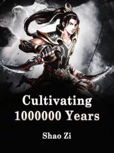

Resumen
Hace cien mil años, él era un discípulo de la Secta Tianlan, su maestro se disparó y estaba refinando el qi.
Hace 90.000 años, su sobrino se disparó y estaba refinando el qi.
Hace cincuenta mil años, el viejo perro de Tianlanzong que custodiaba la puerta también se elevó y todavía estaba refinando Qi.
Hace treinta mil años, el viejo árbol al pie de la montaña se convirtió en un demonio. Todavía estaba refinando el qi.
Hace diez mil años, Zhang Wuji, un discípulo de la novena mil ochocientos setenta y dos generación de la Secta Tianlan, también ascendió, y Xu Yang refinó silenciosamente el Qi.
¡Estuvo en retiro durante 10,000 años y, al final, atravesó el noveno y el noventa y nueve pisos del Período de Refinación de Qi!
¡Diez mil años después, se abrió paso!
Detalles
Título corto : C1Y
Titulo original : 炼气十万年
Estado : Ongoing
Autor(a) : Shao Zi
Género : ction, Adventure, Fantasy, Xuanhuan
CAPITULOS.